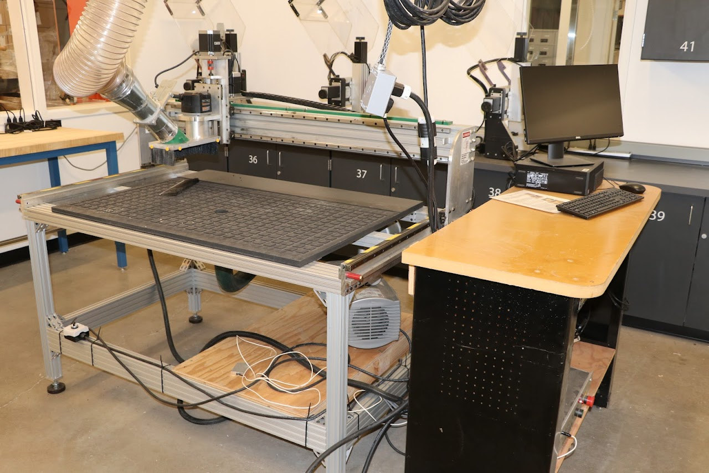

Equipment Inventory

Manufacturer: Forest Scientific
Model#: BT 4x2
Stock#: n/a
Serial#: 1606-VC3ALS-BT4x2MG-11176
Acquired: June 2016 (New)

Manufacturer: Forest Scientific
Model#: Makerfab 4x8
Stock#: n/a
Serial#: NWT-1802-VC3ALS-MF4X8R-11339
Acquired: February 16, 2018 (New)
For Students / Users
- Determining Proper Tool Feed Rates (Wood & Plastic)
- Instructions for Using the Forest Scientific 4x2 and 4x8 CNC Routers
- Recommended Tools and Tool Settings for Processing King Colorcore plastic on a CNC
- Amana Tool Spektra-Plastic O-Flute Speed & Chip Load Chart
- Instructions for Using the Techno Davinci CNC Routers
- General Notes Regarding CNC Routing at CVHS
- Contour and Pocket Toolpaths Using Mastercam
- Velocity CNC Manual for installing software on computers used as the machine interface
Videos
Maintenance History
2/17/22:
2/23/22:
3/3/23: